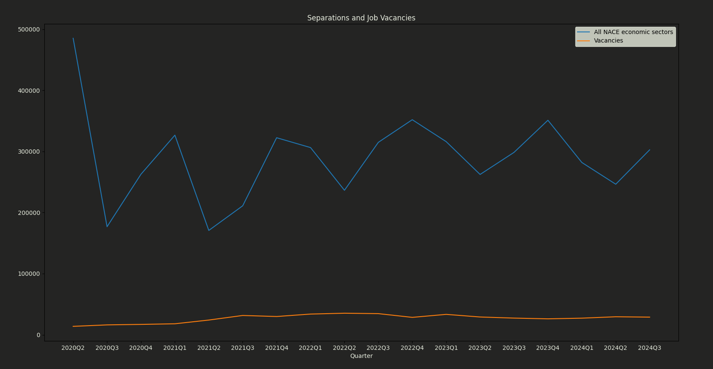

We gather data from data.gov.ie on key employment statistics such as separations, job churn, and job vacancies. From our analysis of our data, which we start from after 2021 to avoid covid, we have found there to be a strong positive correlation between job vacancies and job churn, and a strong negative correlation between job vacancies and separations. This has allowed to make specific recommendations using the most up-to-date information on the job market to our users on what actions they should take in their current job market. In the graph to the right, there is a correlation coefficient of -0.8699015163034602, hence there is a strong negative correlation between separations and job Vacancies.
